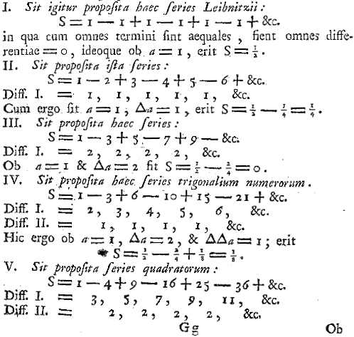
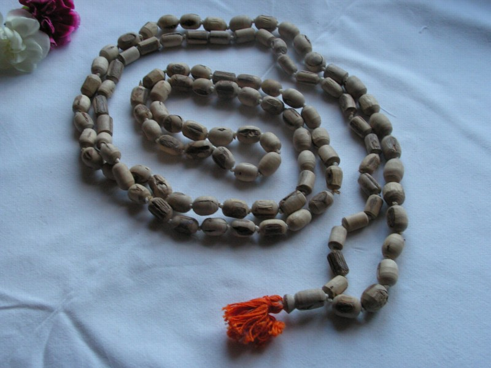
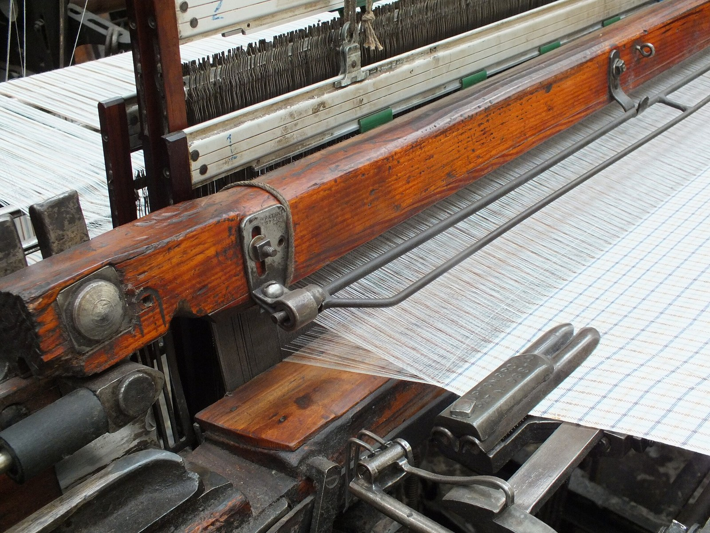
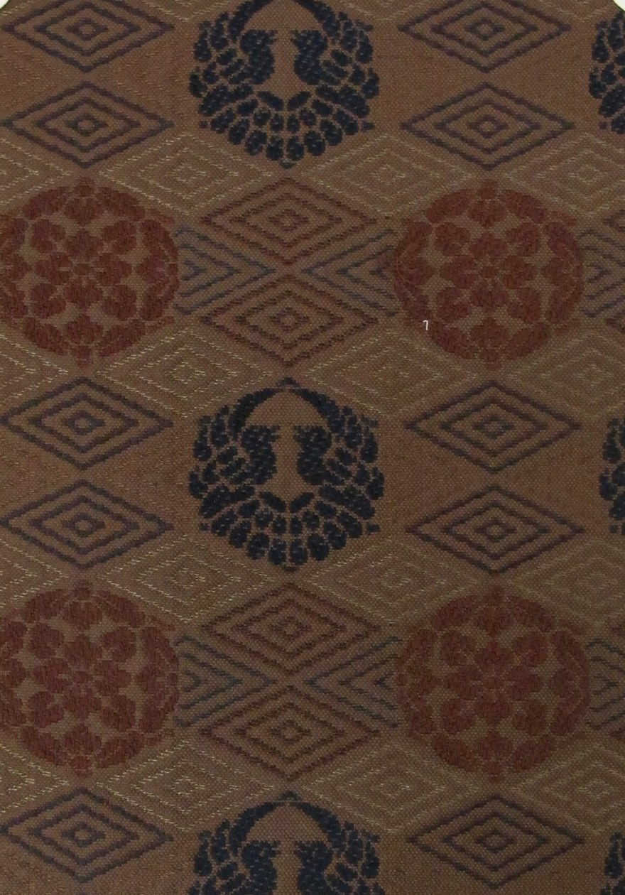
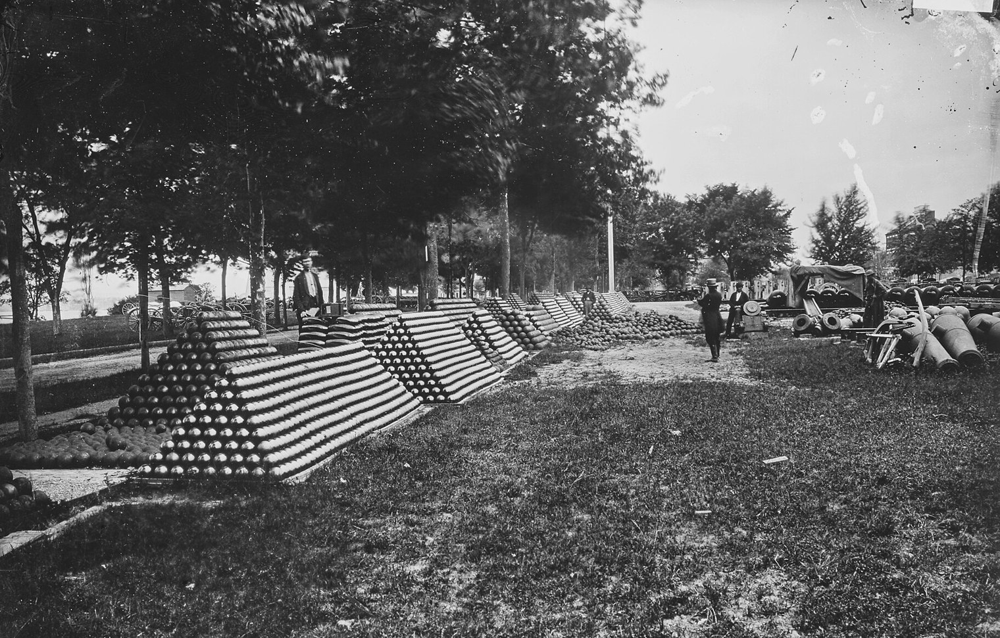
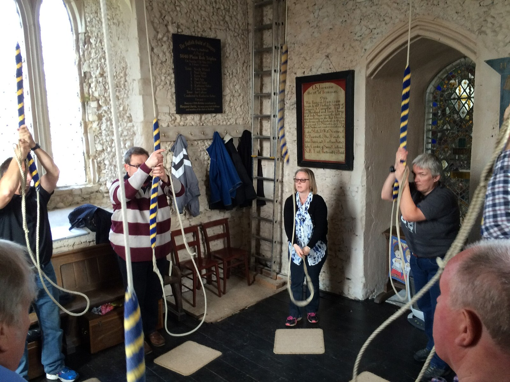
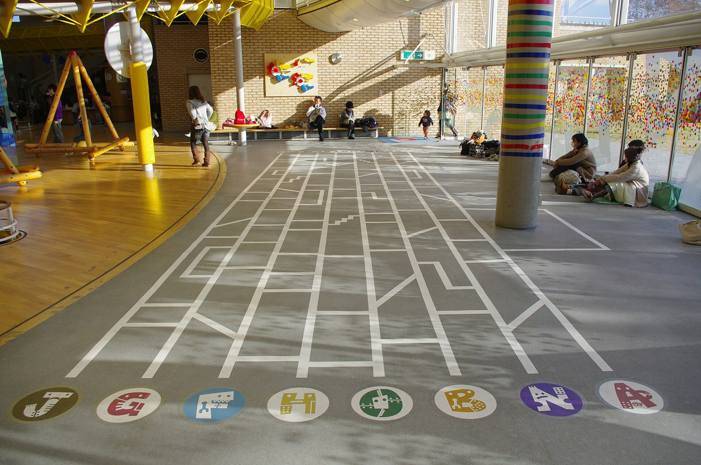
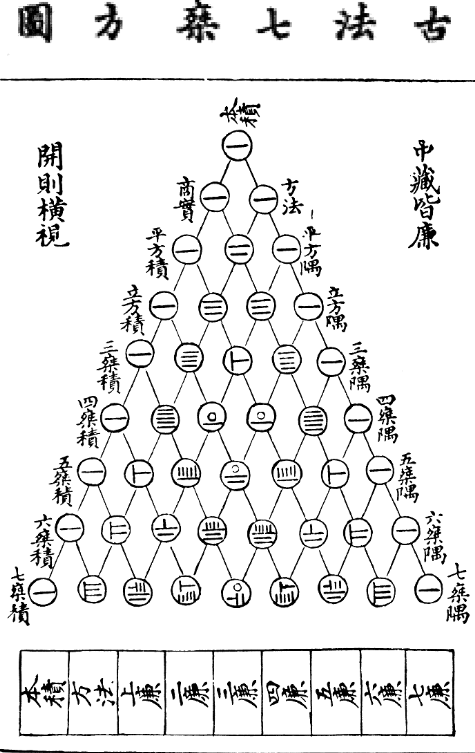
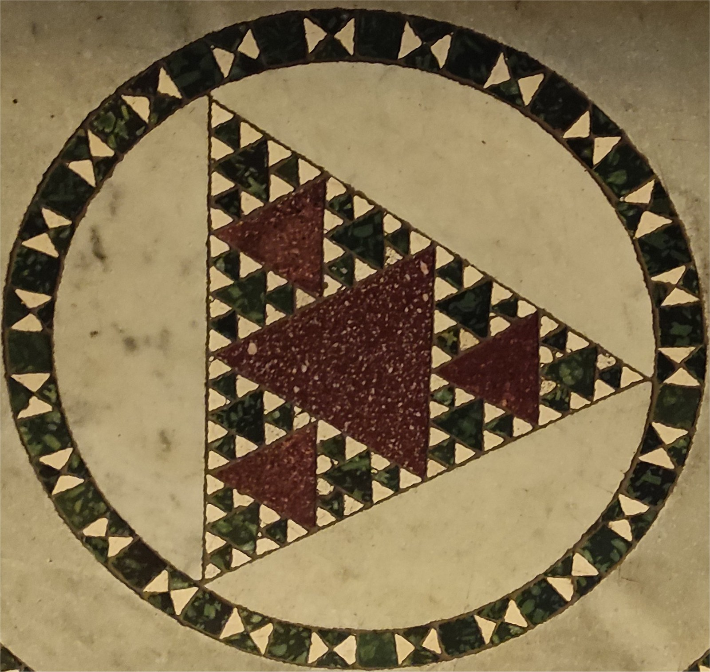

第4回
同じ形の鳥居が、数えきれないほど奥へつづいている。
Basile Morin（2019年）／CC BY-SA 4.0／Wikimedia Commons（伏見稲荷大社。上下を切り落とし、横長に切り出した）
第1回で「規則を読み取る責任は読者にある」と書いた三点リーダー「…」。その曖昧さをなくすために作られた道具が、総和 $\sum$（シグマ）と総乗 $\prod$（パイ）である。添字に使う文字は名前を変えてよい理由、二重和、添字のずらし、等差・等比数列の和、クロネッカーのデルタ、階乗、二項係数までを、数を書き並べて確かめながら進む。
第1回と同じく、新しい記号は緑色の枠（記号）で「①読み方 ②日本語での意味 ③省略していない書き方 ④どこで出会うか」を書く。この回は省略形が多い回なので、省略の段階の箱（$\sum$ の範囲の省略、二重和の添字のまとめ方）を先に置き、以後その箱にリンクして戻れるようにする。
高校の数学Bで習った「数列」と「$\sum$」の内容も、仮定せずに一度は書く。覚えている部分は飛ばしてよい。すべての導出は、文字だけでなく小さい数で一度ためしてから一般の $n$ に進む。
最初に、この回で新しく説明する記号と、前の回で説明済みの記号を分けて並べる。右の列の「→」で説明のある場所へ飛べる。
| 記号 | 読み方 | ざっくりした意味 | 説明 |
|---|---|---|---|
| $\{a_i\}$、$a_1,a_2,\ldots$（数列） | エー・アイ | 番号のついた数の並び | →1.2 |
| $\displaystyle\sum_{i=1}^{n}a_i$ | シグマ、アイ イコール いちから エヌまで、エー・アイ | $a_i$ を $i=1$ から $i=n$ まですべて足したもの | →2.1 |
| $i,\ j,\ k$（ダミー添字） | アイ、ジェイ、ケイ | 和の中だけで使う仮の文字（名前を変えてよい） | →3.2 |
| $\displaystyle\sum_{i=1}^{m}\sum_{j=1}^{n}a_{ij}$ | 二重和 | 表の全部のマスを足したもの | →5.2 |
| $\displaystyle\prod_{i=1}^{n}a_i$ | パイ、… | $a_i$ を $i=1$ から $i=n$ まですべて掛けたもの | →8.1 |
| $\delta_{ij}$ | デルタ・アイ・ジェイ（クロネッカーのデルタ） | $i=j$ なら1、違えば0 | →9.2 |
| $n!$ | エヌ の かいじょう | $1$ から $n$ までの整数をすべて掛けたもの | →10.2 |
| $\displaystyle\binom{n}{k}$ | エヌ チョーズ ケイ、二項係数 | $n$ 個から $k$ 個を選ぶ選び方の数 | →11.2 |
| 記号 | 意味 | 初出 |
|---|---|---|
| $=$、$:=$ | 等しい／左の名前を右の式で決める | 第1回 2.1、第1回 2.2 |
| $\lt\ \gt\ \le\ \ge$、$\neq$ | 大小の関係、等しくない | 第1回 2.6、第1回 2.6 |
| $x_1$（添字） | 名前に番号をつける | 第1回 4.1 |
| $x^2$（冪） | 同じものを $n$ 回掛ける | 第1回 4.2 |
| $\cdots$（三点リーダー） | 同じ規則で続く部分を省く | 第1回 4.5 |
| 省略の段階（S0, S1, …） | 省略の度合いを段階で呼ぶ | 第1回 6.1 |
| $\pi$（小文字）と $\Pi$、$\sigma$ と $\Sigma$、$\delta$ と $\Delta$ | ギリシャ文字の大文字・小文字 | 第1回 3.2 |
| $\in$（属する） | 要素である | 第2回 |
| $\{\ \}$（集合の波括弧） | ものの集まりを書く | 第2回 |
| $\mathbb N,\ \mathbb Z,\ \mathbb R$ | 自然数・整数・実数の集まり | 第2回 |
| $\forall$（すべての） | 「すべての〜について」 | 第2回 |
| $\Rightarrow$（ならば） | 前の文が正しければ後ろの文も正しい | 第2回 |
| $f\colon A\to B$、$x\mapsto$、$f(x)$ | 関数、対応の矢印、関数の値 | 第3回、第3回、第3回 |
| $\ln$、$\log$、$\exp$ | 対数・指数関数 | 第3回、第3回 |
第1回で、三点リーダー $\cdots$ を「同じ規則で続く部分を省く」記号として説明した（第1回 4.5）。そのときの注意は、次の一文だった。
「$1,\;2,\;4,\;\cdots$」の次は、$8$（2倍）かもしれないし、$7$（差が $1,2,3,\ldots$ と増える）かもしれない。
この問題を、実際に数で確かめる。
最初の3項は、どちらも $1,\;2,\;4$ で完全に同じである。4項目から別の数列になる。だから「$1+2+4+\cdots+(n\text{ 番目の項})$」と書かれても、どちらの規則の和なのか、式だけでは決まらない。
図1.1 は、1.1 の2つの規則 A、B を同じ番号の下に並べたものである。最初の3項は同じで、4番目から別の数列になる。
PHOTO 1｜現実

1755年、オイラーは級数の続きを「&c.」と書いて、どこまでかは読み手の察しにまかせた。
Leonhard Euler, Institutiones calculi differentialis／Public domain／Wikimedia Commons（1755年、p.233の一部（Commons の説明による））
MITATE 1｜見立て

百八つの珠を、指で一つずつ送って数える。
GourangaUK（2007年）／CC BY-SA 2.5／Wikimedia Commons（トゥルシー材の数珠（Commons の説明による））
この曖昧さをなくすには、「規則」をことばや点々ではなく、式として書くのが確実である。そのために、まず「番号のついた数の並び」を名前つきで扱えるようにする。
①読み方：$a_i$ は「エー・アイ」。$\{a_i\}$ は「数列 エー・アイ」。
②日本語での意味：数列とは、数を1列に並べて、頭から順に番号（$1$ 番目、$2$ 番目、…）をつけたもの。一般項 $a_i$ とは、「$i$ 番目の数」を表す式。$i$ に具体的な番号を入れれば、その番号の数が決まる。
③省略していない書き方：第1回の添字の「③」で書いたとおり、$a_i$ は関数の書き方 $a(i)$ の引数を右下に小さく書いたものである。つまり数列は、番号 $i$ から数 $a_i$ への関数 $a\colon\mathbb N\to\mathbb R$、$i\mapsto a_i$ にほかならない（$\mathbb N$、$\mathbb R$ は第2回、矢印 $\mapsto$ は第3回）。
④どこで出会うか：高校数学B（数列）、微積分（級数、第14回）、線形代数（ベクトルの成分、第5回）、確率・統計（データ $x_1,x_2,\ldots$）。
1.1 の2つの規則を、一般項の式で書く。
| 規則 | 一般項 | $a_1$ | $a_2$ | $a_3$ | $a_4$ | $a_5$ |
|---|---|---|---|---|---|---|
| Ⓐ 2倍 | $a_i=2^{\,i-1}$ | $1$ | $2$ | $4$ | $8$ | $16$ |
| Ⓑ 差が増える | $a_i=1+\dfrac{i(i-1)}{2}$ | $1$ | $2$ | $4$ | $7$ | $11$ |
Ⓐの $a_4$ は、$2^{4-1}=2^3=8$。Ⓑの $a_4$ は、$1+\dfrac{4\times 3}{2}=1+6=7$。式を入れれば、どの番号の数も一意に決まる。
数列の項を足し合わせた値は、物理でも工学でも頻繁に出てくる（平均、合力、重心、離散的な積分など）。その和を「$a_1+a_2+\cdots+a_n$」と書くと、また「…」に戻ってしまう。そこで、どの番号から、どの番号まで、何を足すのかを全部書く記号が必要になる。それが次の節の $\sum$ である。
①読み方：「シグマ、アイ イコール エムから エヌまで、エー・アイ」。または「$i$ を $m$ から $n$ まで動かした $a_i$ の和」。
②日本語での意味：番号 $i$ を $m$ から $n$ まで、1ずつ増やしながら動かし、そのたびの $a_i$ を全部足したもの。
③省略していない書き方：この記号は完全形に近い。4つの部品からできている。
これを足し算で書くと、$\displaystyle\sum_{i=m}^{n}a_i=a_m+a_{m+1}+a_{m+2}+\cdots+a_n$ である。右辺の「$\cdots$」は$i$ が $1$ ずつ増えるという規則に固定されているので、1.1 のような曖昧さはない。
④どこで出会うか：すべての科目。平均 $\bar x=\frac1n\sum x_i$（第44・46回）、行列の積（第16回）、フーリエ級数（第36回）、テイラー展開（第9回）。
図2.1 は、総和 $\displaystyle\sum_{i=1}^{n}a_i$ の4つの部品に色と番号をつけたものである。
記号 $\Sigma$ は、ギリシャ文字 $\sigma$（シグマ）の大文字で、「和」（Sum）の頭文字Sに当たる文字として使われている（第1回の表に「総和（大文字、第4回）」と書いてあった）。小文字の $\sigma$ は標準偏差や応力で、記号としては別物。
$\displaystyle\sum_{i=1}^{4}a_i$ を、$a_i=i^2$ として計算する。$i$ を $1,2,3,4$ と動かして、1つずつ一般項に入れる。
| $i$ の値 | 一般項 $a_i=i^2$ に入れる | 値 |
|---|---|---|
| $1$ | $1^2$ | $1$ |
| $2$ | $2^2$ | $4$ |
| $3$ | $3^2$ | $9$ |
| $4$ | $4^2$ | $16$ |
| 全部足す | $1+4+9+16=30$ | |
だから $\displaystyle\sum_{i=1}^{4}i^2=30$。コンピュータで言えば、「合計を0にしておき、$i$ を1から4まで回して、そのたびに合計へ $i^2$ を足す」という繰り返しと同じである。
図2.2 は、$\displaystyle\sum_{i=1}^{4}i^2$ を「合計に足していく繰り返し」として描いたものである。$i$ を $1$ から $4$ まで動かしながら、合計が育つ様子を右の棒で見る。
もう1つ。一般項が $a_i$ ではなく、$i$ に関係ない定数のとき。
$\displaystyle\sum_{i=1}^{3}5=5+5+5=15$。一般項 $5$ に $i$ が含まれていなくても、$i$ は $1,2,3$ と3回動くので、5が3回足される。一般に $\displaystyle\sum_{i=1}^{n}c=n\,c$（$c$ は $i$ に無関係な定数）。「$i$ が含まれていないから和は $c$ 自身」ではない。足す回数は、上限と下限だけで決まる。
$\displaystyle\sum_{i=m}^{n}a_i$ の項の個数は、$n-m+1$ である。理由：番号 $m,m+1,\ldots,n$ のうち、$n$ までの番号は $1$ から数えれば $n$ 個、そのうち $m$ より前の $m-1$ 個を除くので、$n-(m-1)=n-m+1$。確かめ：$m=3,\;n=7$ なら番号は $3,4,5,6,7$ の5個で、$7-3+1=5$。
図2.3 は、$\displaystyle\sum_{i=3}^{7}a_i$ の項の個数を、番号の並びで数え直したものである。
上限が下限より小さいとき（$n\lt m$）は、足す項が1つもない。この和を空の和と呼び、値は $0$ と約束する。例：$\displaystyle\sum_{i=1}^{0}a_i=0$。理由：「何も足さない」ときの値は、足し算の何もしない相手である $0$ にしておくと、$\displaystyle\sum_{i=1}^{n}a_i=\sum_{i=1}^{n-1}a_i+a_n$ が $n=1$ でも成り立つから（$n=1$ のとき、右辺は $\displaystyle\sum_{i=1}^{0}a_i+a_1=0+a_1=a_1$ で、左辺 $\displaystyle\sum_{i=1}^{1}a_i=a_1$ と一致する）。
1.2 の2つの規則の「最初の4項の和」を、$\sum$ で書く。一般項を式で書くので、どちらの規則かは記号だけで決まる。
| 規則 | $\sum$ で書く | 展開した足し算 | 値 |
|---|---|---|---|
| Ⓐ | $\displaystyle\sum_{i=1}^{4}2^{\,i-1}$ | $2^0+2^1+2^2+2^3=1+2+4+8$ | $15$ |
| Ⓑ | $\displaystyle\sum_{i=1}^{4}\Bigl(1+\frac{i(i-1)}{2}\Bigr)$ | $1+2+4+7$ | $14$ |
点々の規則を読者に推理させるのではなく、書き手が一般項を全部書く。これが $\sum$ の最大の利点である。
数学の本は、$\sum$ をさらに短く書く。どこまで省いてよいかを、段階で並べる。（省略の段階の考え方は第1回 6.1。）
| 段階 | 書き方 | 何を省いたか | 省いても困らない理由（と、困る場面） |
|---|---|---|---|
| S0 | $\displaystyle\sum_{i=1}^{n}a_i$ | （省略なし。添字・下限・上限・一般項がすべてある） | ― |
| S1 | $\displaystyle\sum_{i}a_i$ | 上限と下限（動く範囲）を書かない | $a_i$ という数列が定義されている番号すべてを足すと読めるとき。例：$a_1,a_2,a_3$ の3個しかない数列なら、$i=1,2,3$ の全部。範囲が文脈から決まらないとき（数列がもっと長いとき）は、省略してはいけない。 |
| S2 | $\displaystyle\sum a_i$ | 動かす添字の名前も下に書かない | 一般項の中に出てくる添字 $i$ が1種類だけで、それを動かすと読めるとき。添字が2種類以上あると（$a_{ij}$ など）、どちらを動かすのかわからなくなる。 |
| S3 | $a_ib_i$（$\sum$ ごと省く） | $\sum$ の記号まで書かない | 同じ添字が1つの項の中に2回出てきたら、その添字については足す、という約束を置くとき（アインシュタインの縮約記法）。この約束は第27回で正面から扱う。この回では使わない。 |
この教材は、特に断らない限りS0 で書く。S1 や S2 が出てくる箇所では、その場で範囲を言い添える。
図2.4 は、省略の段階 S0 から S3 を階段にしたものである。下の段ほど短く書けるが、文脈から読み取る負担が増える。
(1) 「$\sum$ の下の $i=1$ は、$i$ が1という値に決まっている」と読むのは誤り。$i=1$ は「$i$ の最初の値が1」の意味で、$i$ は上限まで動く。
(2) 「$\displaystyle\sum_{i=1}^{n}a_i$ の $a_i$ だけが足される」と読むのは誤り。次の節で見るように、$\sum$ は右に続く式のどこまでを足すのかを、書き方で決めている（2.6）。
$\displaystyle\sum_{i=1}^{3}i+10$ は、どう読むか。2通りありうる。
多くの教科書は、「$\sum$ は、すぐ右の掛け算のかたまりまでにかかる。足し算・引き算の前で終わる」と約束している。この約束に従えば、(a) の読みになる。(b) を言いたいときは、括弧をつけて $\displaystyle\sum_{i=1}^{3}(i+10)$ と書く。この教材では、足し算を含む一般項には、必ず括弧をつける。
図2.5 は、括弧がないときの $\displaystyle\sum_{i=1}^{3}i+10$ の読み方を、$\sum$ がかかる範囲に藍の括りをつけて描いたものである。
教科書を読み比べると、同じ和が $\displaystyle\sum_{i=1}^{3}i^2$ と書かれたり、$\displaystyle\sum_{k=1}^{3}k^2$ と書かれたりする。「$i$ と $k$ で違う式なのでは？」と思うのは自然な疑問である。これを、まず数で確かめる。
| 書き方 | 展開 | 値 |
|---|---|---|
| $\displaystyle\sum_{i=1}^{3}i^2$ | $1^2+2^2+3^2=1+4+9$ | $14$ |
| $\displaystyle\sum_{k=1}^{3}k^2$ | $1^2+2^2+3^2=1+4+9$ | $14$ |
| $\displaystyle\sum_{j=1}^{3}j^2$ | $1^2+2^2+3^2=1+4+9$ | $14$ |
展開すると、文字 $i,k,j$ はどこにも残らない。残るのは、$1^2+2^2+3^2$ という、番号を入れ終わった数だけである。だから、文字の名前が違っても値は変わらない。
図3.1 は、$\displaystyle\sum_{i=1}^{3}i^2$、$\displaystyle\sum_{k=1}^{3}k^2$、$\displaystyle\sum_{j=1}^{3}j^2$ の3つを展開して、同じ足し算にたどり着くことを描いたものである。
①読み方：「ダミー添字」、または「束縛変数（そくばくへんすう）」「動く文字」。
②日本語での意味：$\displaystyle\sum_{i=1}^{n}a_i$ の $i$ のように、和の記号の中だけで「$1$ から $n$ まで動く」と決められている文字。和の外には $i$ という値は存在しない。だからどの文字に書き換えても、和の値は変わらない。
③省略していない書き方：日本語で完全に書けば、「番号を動かして足す。番号には、$i$ でも $k$ でも、好きな名前をつけてよい」。記号で書くと、$\displaystyle\sum_{i=m}^{n}a_i=\sum_{k=m}^{n}a_k$（$\forall$ 第2回の記号を借りれば、すべての文字の選び方 $i,k$ について成り立つ、という文）。ただし書き換えるときは、一般項の中の $i$ も同時に全部書き換える。
④どこで出会うか：$\sum$、$\prod$（第8節）、積分 $\int_a^b f(x)\,dx$ の $x$（第10回）、論理の $\forall x$（第2回）、プログラミングの for 文のループ変数。
プログラミングで確かめるとわかりやすい。次の2つの繰り返しは、変数名が違うだけで、同じ値を返す。
ループの外から見えるのは「合計」だけで、$i$ や $k$ は繰り返しの中だけの道具である。ダミー添字はこれと同じ立場にある。
書き換えてよいのは、「その和の中の $i$ を、全部同じ新しい文字にする」ときだけである。
| 書き換え | 正しいか | 理由 |
|---|---|---|
| $\displaystyle\sum_{i=1}^{3}i^2\ \to\ \sum_{k=1}^{3}k^2$ | 正しい | 下の $i$ と、一般項の $i$ を、両方 $k$ にした。 |
| $\displaystyle\sum_{i=1}^{3}i^2\ \to\ \sum_{k=1}^{3}i^2$ | 誤り | 下だけ $k$ にして、一般項の $i$ を残した。展開すると $1^2+1^2+1^2$ ではなく、「$i$ とは何か」が決まらない式になる。 |
| $\displaystyle\sum_{i=1}^{3}x_i\ \to\ \sum_{x=1}^{3}x_x$ | 書き換えとしては可能だが、読みにくい | 数列の名前 $x$ と添字の名前が衝突する。避ける。 |
図3.2 は、$\displaystyle\sum_{i=1}^{n}x\,i$ に出てくる文字を、和の中だけで動く文字と、外から与えられている文字に色分けしたものである。
$n$ や $x$ のように、和の外から与えられている文字は、ダミー添字ではない。たとえば $\displaystyle\sum_{i=1}^{n}x\,i$ の $n$ と $x$ は、和の外で値が決まっている文字（これを「自由な文字」「パラメータ」と呼ぶ。第1回で扱った「変数・定数・パラメータ」の区別と同じ）。この和の値は $n$ と $x$ によって変わる。一方、$i$ に具体的な値は割り当てられていない。
もう1つ：和の中で、外側の文字と同じ名前をダミー添字に使ってはいけない。たとえば $\displaystyle\sum_{n=1}^{n}a_n$ のように、上限の $n$ と添字の $n$ を同じ文字にすると、「どちらの $n$ か」を読み分けられなくなる。この場合は、$\displaystyle\sum_{k=1}^{n}a_k$ のように添字だけ書き換える。
$\sum$ を使った式を変形するとき、「和を2つに分けてよいか」「定数を外に出してよいか」を、そのつど足し算に展開して確かめるのは大変である。成り立つ規則を、一度だけ導いて名前をつけておく。
$a_1,a_2,a_3$ と $b_1,b_2,b_3$ を、次の数とする。
| $i$ | $1$ | $2$ | $3$ |
|---|---|---|---|
| $a_i$ | $2$ | $5$ | $1$ |
| $b_i$ | $3$ | $4$ | $6$ |
| $a_i+b_i$ | $5$ | $9$ | $7$ |
| $4a_i$ | $8$ | $20$ | $4$ |
図4.1 は、4.2 の数 $a=(2,5,1)$、$b=(3,4,6)$ の足し算を、長さが値に比例する帯で描いたものである。同じ6つの帯を、並べる順序だけ変える。
$c$ を $i$ に関係しない定数とする。このとき、
(L1) $\displaystyle\sum_{i=1}^{n}(a_i+b_i)=\sum_{i=1}^{n}a_i+\sum_{i=1}^{n}b_i$、 (L2) $\displaystyle\sum_{i=1}^{n}c\,a_i=c\sum_{i=1}^{n}a_i$。
(L1)。左辺を、$\sum$ の定義（2.1）に戻して展開する。
① $\displaystyle\sum_{i=1}^{n}(a_i+b_i)=(a_1+b_1)+(a_2+b_2)+\cdots+(a_n+b_n)$
② $=(a_1+a_2+\cdots+a_n)+(b_1+b_2+\cdots+b_n)$
③ $\displaystyle=\sum_{i=1}^{n}a_i+\sum_{i=1}^{n}b_i$
(L2)。
① $\displaystyle\sum_{i=1}^{n}c\,a_i=c\,a_1+c\,a_2+\cdots+c\,a_n$
② $=c\,(a_1+a_2+\cdots+a_n)$
③ $\displaystyle=c\sum_{i=1}^{n}a_i$
(L1) と (L2) をまとめて「線形性」と呼ぶ。2つを組み合わせると、$\displaystyle\sum_{i=1}^{n}(p\,a_i+q\,b_i)=p\sum_{i=1}^{n}a_i+q\sum_{i=1}^{n}b_i$（$p,q$ は定数）が出る。
$m$ を $1\le m\lt n$ の整数として、$\displaystyle\sum_{i=1}^{n}a_i=\sum_{i=1}^{m}a_i+\sum_{i=m+1}^{n}a_i$。展開で確かめる：$a_1+\cdots+a_n=(a_1+\cdots+a_m)+(a_{m+1}+\cdots+a_n)$。足し算の結合法則だけを使っている。数での確認：$a_i=i$、$n=5$、$m=2$。左辺 $1+2+3+4+5=15$。右辺 $(1+2)+(3+4+5)=3+12=15$。
線形性は足し算と定数倍にだけ成り立つ。次の2つは成り立たない。
| 誤った変形 | 反例（4.2 の数） |
|---|---|
| $\displaystyle\sum a_ib_i=\Bigl(\sum a_i\Bigr)\Bigl(\sum b_i\Bigr)$ | 左辺 $2\cdot3+5\cdot4+1\cdot6=6+20+6=32$。右辺 $8\times13=104$。不一致。 |
| $\displaystyle\sum a_i^2=\Bigl(\sum a_i\Bigr)^2$ | 左辺 $4+25+1=30$。右辺 $8^2=64$。不一致。 |
（右辺 $104$ は、後の5.4で見るとおり、「$i$ と $j$ を別々に動かした二重和」の値である。）
図4.2 は、$a_ib_j$ を $3\times3$ の表に並べたものである。$\sum a_ib_i$ と $\left(\sum a_i\right)\left(\sum b_j\right)$ が別の量であることを、足すマスの違いで見る。
1つの番号では足りない量がある。たとえば、3つの測定点それぞれで4回ずつ測った値。$i$ 番目の点の $j$ 回目の値を $a_{ij}$ と書く（添字を2つ並べる書き方は第1回 4.1の拡張で、「$i$ 行 $j$ 列目のマス」と読む。行列での使い方は第5回で正式に扱う）。全部の値の合計を求めたい。
次の表を考える（$i=1,2,3$ が行、$j=1,2,3,4$ が列）。
| $j=1$ | $j=2$ | $j=3$ | $j=4$ | 行の和 | |
|---|---|---|---|---|---|
| $i=1$ | $3$ | $1$ | $4$ | $1$ | $9$ |
| $i=2$ | $5$ | $9$ | $2$ | $6$ | $22$ |
| $i=3$ | $5$ | $3$ | $5$ | $8$ | $21$ |
| 列の和 | $13$ | $13$ | $11$ | $15$ | 全部の和 $52$ |
全部の合計は、行ごとの和を先に出して足す：$9+22+21=52$。列ごとの和を先に出して足す：$13+13+11+15=52$。どちらの順序でも $52$ になる。これを記号で書くのが二重和である。
図5.1 は、5.1 の表に、行の和（右）と列の和（下）を書き込んだものである。
①読み方：「シグマ、アイ イコール いちから エム まで、シグマ、ジェイ イコール いちから エヌ まで、エー・アイ・ジェイ」。
②日本語での意味：内側の $\sum$ が先に計算される。内側 $\displaystyle\sum_{j=1}^{n}a_{ij}$ は、$i$ を固定して $j$ だけを動かした和（表の$i$ 行目の行の和）。外側の $\sum$ は、その行の和を $i=1,\ldots,m$ について足す。
③省略していない書き方：括弧を補った形が完全形。$\displaystyle\sum_{i=1}^{m}\Bigl(\sum_{j=1}^{n}a_{ij}\Bigr)=\Bigl(a_{11}+a_{12}+\cdots+a_{1n}\Bigr)+\Bigl(a_{21}+\cdots+a_{2n}\Bigr)+\cdots+\Bigl(a_{m1}+\cdots+a_{mn}\Bigr)$。
④どこで出会うか：行列の積（第16回）、重積分の離散版（第13回）、確率の周辺化（第44回）。
5.1 の表で、$m=3,\ n=4$ として内側から順に計算する。
| 段階 | 書き方 | 何を省いたか | 省いても困らない理由（と、困る場面） |
|---|---|---|---|
| S0 | $\displaystyle\sum_{i=1}^{m}\Bigl(\sum_{j=1}^{n}a_{ij}\Bigr)$ | （省略なし。括弧もある） | ― |
| S1 | $\displaystyle\sum_{i=1}^{m}\sum_{j=1}^{n}a_{ij}$ | 内側の和を囲む括弧 | $\sum$ は、右に続く式のかたまりにかかる（2.6）。内側の和は1つのかたまりなので、括弧がなくても読める。 |
| S2 | $\displaystyle\sum_{i=1}^{m}\sum_{j=1}^{n}a_{ij}$ → $\displaystyle\sum_{i,j}a_{ij}$（下に $i,j$ を並べる） | $\sum$ を1つにして、下に動かす添字を並べる。上限・下限も省く（$\sum$ の範囲の省略 S1） | 「表のマス $(i,j)$ すべてを足す」と読めるとき。順序（どちらを先に足すか）が消えるが、5.4 で見るとおり、範囲が長方形なら順序で値は変わらないので困らない。 |
| S3 | $\displaystyle\sum a_{ij}$（添字も下に書かない） | 動かす添字の名前 | 表の全マスと読めるとき。添字が3つ以上のときは、どれを動かすのかわからなくなる。 |
| S4 | $a_{ii}$ など、縮約記法 | $\sum$ ごと省く | 第27回で扱う。この回では使わない。 |
PHOTO 2｜現実

縦糸と横糸の格子は、縦に数えても横に数えても同じ数になる。
Clem Rutter（2013年、クイーン・ストリート・ミル）／CC BY 3.0／Wikimedia Commons（縮小した）
MITATE 2｜見立て

同じ紋が、縦にも横にもそろって並ぶ。
Auckland Museum／CC BY 4.0／Wikimedia Commons（周囲の台紙を切り落とした）
$i=1,\ldots,m$、$j=1,\ldots,n$ の範囲が長方形（上限・下限が他方の添字によらない）のとき、
$$\sum_{i=1}^{m}\sum_{j=1}^{n}a_{ij}=\sum_{j=1}^{n}\sum_{i=1}^{m}a_{ij}.$$
表に並べると、左辺は行ごとに足してから、行の和を足す。右辺は列ごとに足してから、列の和を足す。
① 左辺は、表のすべてのマスの値 $a_{ij}$（$mn$ 個）を、行の順に足している。
② 右辺も、同じ $mn$ 個のマスの値を、列の順に足している。
③ 足す数の集まりが同じ（どちらも表のすべてのマス1個ずつ）で、足す順序だけが違う。有限個の足し算は順序によらない。
5.1 の表で、左辺 $=9+22+21=52$、右辺 $=13+13+11+15=52$ と、実際に一致した。
特別な場合：積の和が分かれる。一般項が $a_ib_j$（$i$ の部分と $j$ の部分の積）のときは、
$$\sum_{i=1}^{m}\sum_{j=1}^{n}a_ib_j=\Bigl(\sum_{i=1}^{m}a_i\Bigr)\Bigl(\sum_{j=1}^{n}b_j\Bigr).$$
導出：
① $\displaystyle\sum_{j=1}^{n}a_ib_j=a_i\sum_{j=1}^{n}b_j$
② $\displaystyle\sum_{i=1}^{m}\Bigl(a_i\sum_{j=1}^{n}b_j\Bigr)=\Bigl(\sum_{j=1}^{n}b_j\Bigr)\sum_{i=1}^{m}a_i$
確かめ：4.2 の数で $a=(2,5,1)$、$b=(3,4,6)$ なら、$\displaystyle\sum_{i=1}^{3}\sum_{j=1}^{3}a_ib_j=8\times 13=104$。表に書き下すと、行の和は $2\cdot13=26,\ 5\cdot13=65,\ 1\cdot13=13$ で、$26+65+13=104$。一致する。4.5 の誤った式の右辺 $104$ は、$i$ と $j$ を別々に動かした和の値で、$i=j$ だけを足した $\displaystyle\sum a_ib_i=32$ とは別の量である。
内側の上限が外側の添字に依存すると、範囲が三角形になり、順序を入れ替えるときに上限・下限も書き換える必要がある。例：$n=3$、一般項 $a_{ij}=10i+j$ とする。
$\displaystyle\sum_{i=1}^{3}\sum_{j=1}^{i}(10i+j)$：マス $(i,j)$ は、$j\le i$ を満たすものだけ。並べると $(1,1),(2,1),(2,2),(3,1),(3,2),(3,3)$ の6個。値は $11,21,22,31,32,33$。合計は $11+21+22+31+32+33=150$。
順序を入れ替える。外側を $j$ にする。$j$ の動く範囲は $1$ から $3$。固定した $j$ に対して、条件 $j\le i\le 3$ を満たす $i$ を動かす。
$\displaystyle\sum_{j=1}^{3}\sum_{i=j}^{3}(10i+j)$：$j=1$：$i=1,2,3$ で $11+21+31=63$。$j=2$：$i=2,3$ で $22+32=54$。$j=3$：$i=3$ で $33$。合計 $63+54+33=150$。一致する。
図5.2 は、5.5 の三角形の二重和 $a_{ij}=10i+j$ を表にしたものである。上が正しい書き換え、下が上限だけを入れ替えた誤った式である。
三角形の範囲で、上限だけを入れ替えて $\displaystyle\sum_{j=1}^{3}\sum_{i=1}^{j}(10i+j)$ と書くのは誤り。この式のマスは $(1,1),(1,2),(2,2),(1,3),(2,3),(3,3)$ で、元の式とは別のマスを足している（値は $11+12+22+13+23+33=114$）。入れ替えるときは「どのマスを足しているか」を表に書いて確かめる。
和の項は同じでも、「$i=1$ から」を「$k=0$ から」に書き直したい場面がある。ほかの和と下限をそろえて、一緒にまとめるためである（後の7節と11節で実際に使う）。このときの書き換えが、添字のずらしである。
$\displaystyle\sum_{i=1}^{4}i^2=1+4+9+16=30$ を、$k=i-1$ とおいて書き換える。
展開した足し算はまったく同じで、番号の付け方だけが違う。
図6.1 は、$\displaystyle\sum_{i=1}^{4}i^2$ を $k:=i-1$ で書き換えたとき、番号の付け方だけが変わることを描いたものである。
整数 $s$ について、
$$\sum_{i=m}^{n}a_i=\sum_{k=m+s}^{n+s}a_{k-s}.$$
手順：①新しい添字 $k$ を $k=i+s$ で決める。②下限と上限に $s$ を足す。③一般項の $i$ を $k-s$ にする。
確かめ：上の例は $s=-1$（$k=i-1$）で、$m=1,\ n=4$。下限 $m+s=0$、上限 $n+s=3$、一般項 $a_{k-s}=a_{k+1}=(k+1)^2$。確かに上の結果と一致する。
もう1つの例：$s=+2$（$k=i+2$）。$\displaystyle\sum_{i=1}^{3}i=1+2+3=6$。ずらすと $\displaystyle\sum_{k=3}^{5}(k-2)=(3-2)+(4-2)+(5-2)=1+2+3=6$。
(1) 一般項だけ書き換えて、上限・下限を元のままにするのは誤り。$\displaystyle\sum_{k=1}^{4}(k+1)^2=4+9+16+25=54\ne 30$。
(2) 下限・上限だけ書き換えて、一般項を元のままにするのも誤り。$\displaystyle\sum_{k=0}^{3}k^2=0+1+4+9=14\ne 30$。
3つ（下限・上限・一般項）はセットで変える。
図6.2 は、ずらしで3つのうち1つか2つだけを変えると、足す項の集まりが変わってしまうことを描いたものである。
$k=n+1-i$ とおくと、$i=1$ のとき $k=n$、$i=n$ のとき $k=1$。足す順序が逆になるだけで、項の集まりは変わらない。
$$\sum_{i=1}^{n}a_i=\sum_{k=1}^{n}a_{n+1-k}.$$
確かめ：$n=3$。右辺 $=a_3+a_2+a_1$。左辺と同じ項が逆順に並ぶ。（次の7.1で使う。）
ここまでの道具（定義の展開、線形性、ずらし）で、高校で公式として習う和を、自分で導く。覚えている人は結果だけ確かめて飛ばしてよい。
PHOTO 3｜現実

砲弾は、一段ごとに数を増やして積まれ、山は角錐の形になる。
Mathew Benjamin Brady（1860年ごろ〜、米国国立公文書館）／Public domain／Wikimedia Commons（ガラス乾板の縁を切り落とした）
動機：「$1$ から $n$ までの整数の和」は、機械の部品を数えたり、等間隔の目盛りの平均を計算したりするときに出る。
最小の具体例：$n=5$。$1+2+3+4+5=15$。
$\displaystyle\sum_{k=1}^{n}k=\dfrac{n(n+1)}{2}$。
$S:=\displaystyle\sum_{k=1}^{n}k$ とおく。
① $S=\displaystyle\sum_{k=1}^{n}(n+1-k)$
② $2S=\displaystyle\sum_{k=1}^{n}k+\sum_{k=1}^{n}(n+1-k)$
③ $\phantom{2S}=\displaystyle\sum_{k=1}^{n}\bigl(k+(n+1-k)\bigr)$
④ $\phantom{2S}=\displaystyle\sum_{k=1}^{n}(n+1)$
⑤ $\phantom{2S}=n(n+1)$
⑥ $S=\dfrac{n(n+1)}{2}$
確かめ：$n=5$ で $\dfrac{5\times 6}{2}=15$。展開した値と一致。$n=1$ で $\dfrac{1\times2}{2}=1$。一致。
図7.1 は、$n=5$ のときの $1+2+3+4+5$ を点の個数で描き、逆順に読んだものを重ねて長方形にしたものである。
一般項が $a_k=a+(k-1)d$ の数列を、等差数列と呼ぶ（初項 $a$、公差 $d$。隣り合う項の差が常に $d$）。最初の $n$ 項の和：
① $\displaystyle\sum_{k=1}^{n}\bigl(a+(k-1)d\bigr)=\sum_{k=1}^{n}a+d\sum_{k=1}^{n}(k-1)$
② $\displaystyle=na+d\Bigl(\sum_{k=1}^{n}k-\sum_{k=1}^{n}1\Bigr)$
③ $\displaystyle=na+d\Bigl(\dfrac{n(n+1)}{2}-n\Bigr)$
④ $\displaystyle=na+d\,\dfrac{n(n-1)}{2}$
確かめ：$a=3,\ d=2,\ n=5$。展開：$3+5+7+9+11=35$。公式：$5\times3+2\times\dfrac{5\times4}{2}=15+20=35$。一致する。
一般項が $a\,r^{k}$ の数列を等比数列と呼ぶ（隣り合う項の比が常に $r$）。まず $a=1$ で導く。2.4 のⒶ（$r=2$）がこれに当たる。
$r\neq 1$ のとき、$\displaystyle\sum_{k=0}^{n-1}r^k=\dfrac{r^n-1}{r-1}$。$r=1$ のとき、値は $n$。
$S:=\displaystyle\sum_{k=0}^{n-1}r^k$ とおく（$r^0=1$ と約束する。冪の定義は第1回 4.2）。
① $rS=\displaystyle\sum_{k=0}^{n-1}r\cdot r^k=\sum_{k=0}^{n-1}r^{k+1}$
② $\phantom{rS}=\displaystyle\sum_{k=1}^{n}r^{k}$
③ $rS=\displaystyle\Bigl(\sum_{k=1}^{n-1}r^k\Bigr)+r^n$
④ $S=r^0+\displaystyle\sum_{k=1}^{n-1}r^k$
⑤ $rS-S=r^n-r^0=r^n-1$
⑥ $(r-1)S=r^n-1$
⑦ $S=\dfrac{r^n-1}{r-1}$
$r=1$ のときは、すべての項が $1^k=1$ で、$n$ 個の1の和 $=n$（⑥は $0=0$ になり、割れない）。
図7.2 は、$n=4$ の等比数列の和 $S=r^0+r^1+r^2+r^3$ と、その $r$ 倍 $rS$ を、1つずらして縦に並べたものである。
確かめ：$r=2,\ n=4$。展開：$1+2+4+8=15$。公式：$\dfrac{2^4-1}{2-1}=15$。一致する。$r=3,\ n=3$：展開 $1+3+9=13$、公式 $\dfrac{27-1}{2}=13$。一致する。
一般の初項 $a$ なら、(L2) で $a$ を外に出して $\displaystyle\sum_{k=0}^{n-1}a\,r^k=a\,\dfrac{r^n-1}{r-1}$。
項の個数に注意する。$\displaystyle\sum_{k=0}^{n-1}$ は $n$ 個の項、$\displaystyle\sum_{k=0}^{n}$ なら $n+1$ 個の項で、公式は $\dfrac{r^{n+1}-1}{r-1}$ になる（$n$ を $n+1$ に置き換える）。「$r^n$ の $n$」が項数と一致するのは、上限が $n-1$ のときである。
動機：二乗の和は、慣性モーメントの離散的な計算や、最小二乗法（第47回）の係数の計算に出てくる。導出では、前後の項が打ち消し合う形（望遠鏡和）を作る。
最小の具体例：$n=4$、$\displaystyle\sum_{k=1}^{4}k^2=1+4+9+16=30$。
$\displaystyle\sum_{k=1}^{n}k^2=\dfrac{n(n+1)(2n+1)}{6}$。
① $(k+1)^3-k^3=3k^2+3k+1$
② $\displaystyle\sum_{k=1}^{n}\bigl((k+1)^3-k^3\bigr)=\sum_{k=1}^{n}(3k^2+3k+1)$
③ 左辺 $=\displaystyle\sum_{k=1}^{n}(k+1)^3-\sum_{k=1}^{n}k^3$
④ $\phantom{左辺}=\displaystyle\sum_{k=2}^{n+1}k^3-\sum_{k=1}^{n}k^3$
⑤ $\phantom{左辺}=(n+1)^3-1^3$
⑥ 右辺 $=3\displaystyle\sum_{k=1}^{n}k^2+3\sum_{k=1}^{n}k+n$
⑦ よって $(n+1)^3-1=3\displaystyle\sum_{k=1}^{n}k^2+\dfrac{3n(n+1)}{2}+n$
⑧ $3\displaystyle\sum_{k=1}^{n}k^2=(n^3+3n^2+3n)-\dfrac{3n^2+3n}{2}-n$
⑨ $\phantom{3\sum k^2}=\dfrac{2n^3+6n^2+6n-3n^2-3n-2n}{2}=\dfrac{2n^3+3n^2+n}{2}$
⑩ $\phantom{3\sum k^2}=\dfrac{n(2n^2+3n+1)}{2}=\dfrac{n(n+1)(2n+1)}{2}$
⑪ $\displaystyle\sum_{k=1}^{n}k^2=\dfrac{n(n+1)(2n+1)}{6}$
確かめ：$n=4$。公式 $\dfrac{4\times5\times9}{6}=30$。展開と一致。$n=10$：公式 $\dfrac{10\cdot11\cdot21}{6}=385$。（検算は draft/check_04.py。）
図7.3 は、$n=4$ のときの $\displaystyle\sum_{k=1}^{4}\bigl((k+1)^3-k^3\bigr)$ を、段ごとに $+(k+1)^3$ と $-k^3$ に分けて並べたものである。
足し算に $\sum$ があるなら、掛け算にも同じ記号が欲しい。たとえば「$n$ 個の部品がそれぞれ確率 $p_i$ で正常に動くとき、全部が正常に動く確率」は $p_1\times p_2\times\cdots\times p_n$ で、また「…」が出てくる。
①読み方：「パイ、アイ イコール エムから エヌまで、エー・アイ」。または「$a_i$ の $i=m$ から $n$ までの積」。
②日本語での意味：$i$ を $m$ から $n$ まで1ずつ動かし、そのたびの $a_i$ を全部掛けたもの。
③省略していない書き方：$\displaystyle\prod_{i=m}^{n}a_i=a_m\times a_{m+1}\times\cdots\times a_n$。添字・下限・上限・一般項の4つの部品は $\sum$ と全く同じ（2.1）。省略の段階も $\sum$ と同じで（$\sum$ の範囲の省略）、$\displaystyle\prod_i a_i$、$\prod a_i$ と略す本がある。
④どこで出会うか：確率（独立な事象の積、第44回）、階乗（10節）、二項係数（11節）、行列式の定義（第18回）。
記号 $\Pi$ は、ギリシャ文字 $\pi$（パイ）の大文字で、「積」（Product）の頭文字P に当たる文字として使われている。小文字の $\pi$（円周率）とは別物。第1回の表に「総乗（大文字、第4回）」と書いてあった。
$a_1=2,\ a_2=3,\ a_3=5,\ a_4=7$ のとき、$\displaystyle\prod_{i=1}^{4}a_i=2\times3\times5\times7=210$。
定数の積：$\displaystyle\prod_{i=1}^{n}c=c\times c\times\cdots\times c=c^n$（$c$ が $n$ 個。冪の定義 第1回 4.2）。確かめ：$\displaystyle\prod_{i=1}^{3}5=5\times5\times5=125=5^3$。
空の積：上限が下限より小さいとき（項が1つもない）、$\displaystyle\prod_{i=1}^{0}a_i=1$ と約束する。$\sum$ の空の和が $0$ だったのと対応して、掛け算の「何もしない相手」は $1$ だからである。この約束は、10節の $0!=1$ の理由に直接つながる。
性質：$\displaystyle\prod_{i=1}^{n}(a_ib_i)=\Bigl(\prod_{i=1}^{n}a_i\Bigr)\Bigl(\prod_{i=1}^{n}b_i\Bigr)$。導出：$(a_1b_1)(a_2b_2)\cdots(a_nb_n)$ の掛ける順序を入れ替えて $(a_1a_2\cdots a_n)(b_1b_2\cdots b_n)$ にした（掛け算の交換法則・結合法則）。$\sum$ では「和の和は分けられる」だったものが、$\prod$ では「積の積は分けられる」になる。
積を和に変える道具が対数である。すべての $a_i$ が正のとき、$\displaystyle\ln\Bigl(\prod_{i=1}^{n}a_i\Bigr)=\sum_{i=1}^{n}\ln a_i$（対数は第3回）。導出：$\ln(xy)=\ln x+\ln y$ を、$n$ 個の因数に繰り返し使う。確かめ：8.2 の例で、$\ln 210=5.3471\ldots$、$\ln2+\ln3+\ln5+\ln7=0.6931+1.0986+1.6094+1.9459=5.3471\ldots$。一致する。確率を多数掛けると小さくなりすぎるので、対数を取って和にする、という使い方が統計（第46回）で出てくる。
図8.1 は、総和 $\sum$ と総乗 $\prod$ を、同じ項目で左右に並べたものである。
$\displaystyle\sum_{j=1}^{3}a_j=a_1+a_2+a_3$ は、$j=1,2,3$ のすべてを足す。ところが、後の回（行列の成分、座標軸の方向ベクトル）では、「$j=i$ の1つだけを残して、あとは消したい」という場面が頻繁に出る。そのために、「$j$ が $i$ に等しいとき1、等しくないとき0」を返す係数を用意して、各項に掛ける。
①読み方：「デルタ・アイ・ジェイ」。「クロネッカーのデルタ」。
②日本語での意味：2つの添字が等しければ $1$、等しくなければ $0$。
③省略していない書き方：場合分けで書く。
$$\delta_{ij}:=\begin{cases}1 & (i=j\text{ のとき})\\ 0 & (i\neq j\text{ のとき})\end{cases}$$
ここで $i,j$ は添字で、整数である。$\delta_{ij}$ は関数の一種で、入力が2つの整数 $(i,j)$、出力が $0$ か $1$ である。（$\neq$ は第1回 2.6。）
④どこで出会うか：線形代数（単位行列の成分、第5・16回）、ベクトル解析・縮約記法（第27回）、直交関数系（第36回）、量子力学（正規直交基底）。
$i,j\in\{1,2,3\}$ の9通りを、表にする。
| $\delta_{ij}$ | $j=1$ | $j=2$ | $j=3$ |
|---|---|---|---|
| $i=1$ | $1$ | $0$ | $0$ |
| $i=2$ | $0$ | $1$ | $0$ |
| $i=3$ | $0$ | $0$ | $1$ |
1が左上から右下へ斜めに並ぶ。この斜めの並びを持つ3行3列の表が、第5回で扱う単位行列である。つまり $\delta_{ij}$ は、単位行列の $(i,j)$ 成分を表す。
図9.1 は、$\delta_{ij}$ の $i,j\in\{1,2,3\}$ の9通りの値を表にしたものである。
(1) $\delta_{ij}$ の $\delta$ は、微小量の $\delta$ や、ディラックのデルタ関数 $\delta(x)$（第39回）とは別物。添字が2つついているので見分けられる。
(2) $\delta^{i}{}_{j}$ のように添字の位置が上下に分かれる書き方が、相対論や微分幾何にある。意味は同じ。この教材では $\delta_{ij}$ を使う。
まず数で。$a_1=7,\ a_2=5,\ a_3=9$ とする。$i=2$ に固定して、$\displaystyle\sum_{j=1}^{3}\delta_{2j}a_j$ を展開する。
① $=\delta_{21}a_1+\delta_{22}a_2+\delta_{23}a_3$
② $=0\cdot7+1\cdot5+0\cdot9$
③ $=5=a_2$
$i=3$ なら $0\cdot7+0\cdot5+1\cdot9=9=a_3$。$i=1$ なら $1\cdot7+0+0=7=a_1$。
図9.2 は、9.3 の例 $a=(7,5,9)$、$i=2$ のときの $\displaystyle\sum_{j=1}^{3}\delta_{2j}a_j$ を、列ごとに掛け算して足す形で描いたものである。
$\displaystyle\sum_{j=1}^{n}\delta_{ij}\,a_j=a_i$ （$i$ は $1$ から $n$ のどれか）。
① $\displaystyle\sum_{j=1}^{n}\delta_{ij}a_j=\delta_{i1}a_1+\cdots+\delta_{ii}a_i+\cdots+\delta_{in}a_n$
② $j\neq i$ の項はすべて $\delta_{ij}=0$ なので $0\cdot a_j=0$。
③ $j=i$ の項は $\delta_{ii}a_i=1\cdot a_i=a_i$。
④ よって和は $a_i$。
読み方のコツ：「$\delta_{ij}$ が $j$ についての和の中にあるとき、$j$ を $i$ に置き換えて、$\delta_{ij}$ と $\sum_j$ を消す」。これは暗記ではなく、上の導出の言い換えである。
確かめ（2つ目、$n=3$、$i=1,\ k=1$ と $i=1,\ k=2$）：$i=1,\ k=1$ → $\delta_{11}\delta_{11}+\delta_{12}\delta_{21}+\delta_{13}\delta_{31}=1+0+0=1=\delta_{11}$。$i=1,\ k=2$ → $\delta_{11}\delta_{12}+\delta_{12}\delta_{22}+\delta_{13}\delta_{32}=0+0+0=0=\delta_{12}$。
9.3 の式は、省略の段階 S3 の流派では $\delta_{ij}a_j=a_i$ と書かれる。「$j$ が1つの項に2回出てきたら、$j$ について足す」という約束を置いて、$\sum_j$ を書かない。この約束は強力だが、約束を知らずに見ると、式が成り立っていることすらわからない。そこでこの教材では、約束の中身を第27回で確かめるまで、$\sum$ を書き続ける。
PHOTO 4｜現実

鐘を鳴らす順番を替えながら、並べ方を一つずつ鳴らしていく。
Qazwsx777（2016年、サフォーク州ハドリー）／CC0／Wikimedia Commons（縮小した）
MITATE 4｜見立て

上の出発点と下の行き先が、あみだくじで一つずつ結ばれる。
Emran Kassim（2010年）／CC BY 2.0／Wikimedia Commons（縮小した）
3人 A, B, C を1列に並べる並べ方は何通りか。実際に書き出す。
ABC、ACB、BAC、BCA、CAB、CBA の6通り。
数え方：列の1番目に来る人は3通り。それを決めた後、2番目に来る人は残りの2通り。最後の3番目は残りの1通りに決まる。積の法則により、$3\times2\times1=6$。他の人数でも同じ考え方で、4人なら $4\times3\times2\times1=24$ 通りである。こうした「1から $n$ までの整数の積」が頻繁に出るので、名前をつける。
図10.1 は、A, B, C の3人を1列に並べるときの選び方を、枝分かれで描いたものである。
①読み方：「エヌ の かいじょう」（英語では “n factorial”）。
②日本語での意味：$1$ から $n$ までの整数をすべて掛けたもの。$n$ 個のものを1列に並べる並べ方の数。
③省略していない書き方：$n!:=\displaystyle\prod_{k=1}^{n}k=1\times2\times3\times\cdots\times n$（$n$ は $1$ 以上の整数）。さらに $0!:=1$ と定める（10.3）。
④どこで出会うか：二項係数（11節）、順列・組合せ（確率、第44回）、テイラー展開の係数 $\frac{f^{(n)}(a)}{n!}$（第9回）、スターリングの公式（統計力学）。
| $n$ | $0$ | $1$ | $2$ | $3$ | $4$ | $5$ | $6$ | $7$ |
|---|---|---|---|---|---|---|---|---|
| $n!$ | $1$ | $1$ | $2$ | $6$ | $24$ | $120$ | $720$ | $5040$ |
漸化式（前の値から次の値を作る式）：$(n+1)!=(n+1)\cdot n!$。確かめ：$5!=5\times4!=5\times24=120$。導出：$(n+1)!=1\times2\times\cdots\times n\times(n+1)=\bigl(1\times\cdots\times n\bigr)\times(n+1)=n!\times(n+1)$。
$n!$ は急速に大きくなる。$10!=3628800$、$20!\approx2.43\times10^{18}$（$\approx$ は第1回 2.4）。
(1) 感嘆符「!」は、数学では感嘆の意味ではない。「$5!$」は「5の階乗＝120」で、「5だ！」ではない。
(2) $(2n)!$ と $2\,n!$ は別物。$n=3$：$(2\cdot3)!=6!=720$、$2\cdot3!=12$。
(3) $n!$ の $!$ は $n$ だけにかかる。$(n+1)!$ と $n+1!$ は別物（後者は $n+(1!)=n+1$ と読まれかねない）ので、括弧をつける。
$0!$ は「1から0までの整数の積」だが、1から0までの整数はない。これをどう決めるか。3つの理由を並べる。
3つの理由が同じ結論になる。「0! は0になりそう」という直観は、掛け算で0が出ると全部0になる、という連想から来る誤りである。ここには0を掛ける操作は存在しない。
4人 A, B, C, D から2人を選ぶ（選ぶ順序は気にしない）。選び方を全部書く。
{A,B}、{A,C}、{A,D}、{B,C}、{B,D}、{C,D} の6通り。（波括弧 $\{\ \}$ は「ものの集まり」で、第2回の記号。集まりでは順序を区別しないので、{A,B} と {B,A} は同じ。）
図11.1 は、4人 A, B, C, D から2人を選ぶ6通りを、4つの点を結ぶ6本の線と、6つの札で描いたものである。
数式で求める。まず順序を区別して選ぶと、1人目が4通り、2人目が残りの3通りで $4\times3=12$ 通り。ところが {A,B} は「A→B」と「B→A」の2回数えられている。どの選び方も、2人の並べ方 $2!=2$ 回ずつ数えられているので、$12\div2=6$。これを一般化する。
①読み方：「エヌ チョーズ ケイ」（英語 “n choose k”）。日本語では「二項係数」。高校では ${}_n\mathrm C_k$（エヌ シー ケイ）と書く。
②日本語での意味：$n$ 個のものから、順序を区別せずに $k$ 個を選ぶ選び方の数。
③省略していない書き方：
$$\binom{n}{k}:=\frac{n!}{k!\,(n-k)!}\qquad(n,k\text{ は整数で }0\le k\le n).$$
階乗 $n!$ は10.2、$:=$ は第1回 2.2、$0\le k\le n$ は第1回 2.6の不等号。
④どこで出会うか：二項定理（11.4）、確率（二項分布、第44回）、テイラー展開（$(1+x)^\alpha$、第9回）。
11.1 の例：$\displaystyle\binom{4}{2}=\dfrac{4!}{2!\,2!}=\dfrac{24}{2\times2}=6$。選び方を書き出した数と一致する。
定義から言える性質：
PHOTO 5｜現実

1303年の中国の本に、二項係数の三角形がすでに描かれている。
朱世傑『四元玉鑑』／Public domain／Wikimedia Commons（1303年の図（Commons の説明による））
MITATE 5｜見立て

三角形のなかに、小さな三角形がくり返し現れる。
Giorgio Pietrocola（2022年）／CC BY-SA 4.0／Wikimedia Commons（縮小した）
$\displaystyle\binom{n}{k}$ を $n=0,1,2,\ldots,5$ について並べる（$k=0$ から $n$ まで）。
| $n$ | $k=0$ | $k=1$ | $k=2$ | $k=3$ | $k=4$ | $k=5$ | 行の和 |
|---|---|---|---|---|---|---|---|
| 0 | 1 | 1 | |||||
| 1 | 1 | 1 | 2 | ||||
| 2 | 1 | 2 | 1 | 4 | |||
| 3 | 1 | 3 | 3 | 1 | 8 | ||
| 4 | 1 | 4 | 6 | 4 | 1 | 16 | |
| 5 | 1 | 5 | 10 | 10 | 5 | 1 | 32 |
表を見ると、各マスが、1つ上の行の「真上」と「左上」の和になっている（例：$n=5,k=2$ の $10=4+6$）。これを式で示す。
図11.2 は、11.3 の表を三角形に並べ、$\binom{5}{2}=10$ がどこから決まるかを矢印で描いたものである。
$1\le k\le n$ のとき、$\displaystyle\binom{n}{k}+\binom{n}{k-1}=\binom{n+1}{k}$。
① 左辺 $=\dfrac{n!}{k!\,(n-k)!}+\dfrac{n!}{(k-1)!\,(n-k+1)!}$
② $=\dfrac{n!\,(n-k+1)}{k!\,(n-k+1)!}+\dfrac{n!\,k}{k!\,(n-k+1)!}$
③ $=\dfrac{n!\,\bigl((n-k+1)+k\bigr)}{k!\,(n-k+1)!}$
④ $=\dfrac{n!\,(n+1)}{k!\,(n+1-k)!}$
⑤ $=\dfrac{(n+1)!}{k!\,(n+1-k)!}=\dbinom{n+1}{k}$
確かめ：$n=4,\ k=2$。$\binom42+\binom41=6+4=10=\binom52$。一致する。
動機：$(a+b)^n$ を展開したときの各項の係数を、公式にしたい。
まず小さい $n$ で。
$b$ が $k$ 個になる選び方の数は、「$n$ 個の括弧のうち、どの $k$ 個から $b$ を選ぶか」の選び方の数、すなわち $\displaystyle\binom{n}{k}$ である（$n=3$：$\binom30=1,\ \binom31=3,\ \binom32=3,\ \binom33=1$ で一致）。
図11.3 は、$(a+b)^3$ を展開するときの8通りの選び方を、$b$ の個数ごとに分けたものである。
$n$ を $0$ 以上の整数とする。
$$(a+b)^n=\sum_{k=0}^{n}\binom{n}{k}a^{\,n-k}b^{\,k}.$$
読み方：$k$ を $0$ から $n$ まで動かし、「$b$ が $k$ 個、$a$ が $n-k$ 個」の項の係数 $\binom nk$ を掛けて足す。ここで $k$ はダミー添字（3.2）。$n=3$ で展開すると：$k=0$：$\binom30a^3b^0=a^3$、$k=1$：$3a^2b$、$k=2$：$3ab^2$、$k=3$：$b^3$。
上の「選び方を数える」説明は、一般の $n$ でも成り立つ。もう1つの確かめとして、パスカルの関係（11.3）と添字のずらし（第6節）を使った証明を書く。
$n=0$：$(a+b)^0=1$、右辺 $\displaystyle\sum_{k=0}^{0}\binom0ka^{-k}b^{k}=\binom00=1$。成り立つ。
ある $n$ で成り立つと仮定して、$n+1$ で成り立つことを示す。
① $(a+b)^{n+1}=(a+b)\displaystyle\sum_{k=0}^{n}\binom nka^{n-k}b^k$
② $=\displaystyle\sum_{k=0}^{n}\binom nka^{n+1-k}b^k+\sum_{k=0}^{n}\binom nka^{n-k}b^{k+1}$
③ 第2の和で $k+1\to k$ とずらす：$\displaystyle\sum_{k=0}^{n}\binom nka^{n-k}b^{k+1}=\sum_{k=1}^{n+1}\binom n{k-1}a^{n+1-k}b^{k}$
④ 第1の和から $k=0$ の項 $a^{n+1}$ を、第2の和から $k=n+1$ の項 $b^{n+1}$ を外に出す。残りは $k=1,\ldots,n$ の共通範囲
⑤ $=a^{n+1}+\displaystyle\sum_{k=1}^{n}\Bigl(\binom nk+\binom n{k-1}\Bigr)a^{n+1-k}b^k+b^{n+1}$
⑥ $=\displaystyle\binom{n+1}{0}a^{n+1}+\sum_{k=1}^{n}\binom{n+1}ka^{n+1-k}b^k+\binom{n+1}{n+1}b^{n+1}$
⑦ $=\displaystyle\sum_{k=0}^{n+1}\binom{n+1}ka^{n+1-k}b^k$
使い方の例：
${}_n\mathrm C_k$（日本の高校）、$\binom nk$（大学以降、世界標準）、$C(n,k)$、$C^n_k$ は同じ量。$\binom{n}{k}$ を分数の形 $\frac nk$ と見間違えない（横線がない）。範囲外の $k$（$k\lt0$ や $k\gt n$）に対して $\binom nk:=0$ と約束する本もあるが、この教材では $0\le k\le n$ に限って使う。
$\displaystyle\sum_{k=1}^{5}(2k-1)$ を、(1) 日本語で読み、(2) 足し算に展開し、(3) 値を求めよ。
解答
① (1)：添字は $k$、下限は $1$、上限は $5$、一般項は $2k-1$（2.1 の4部品）。「$k$ を1から5まで動かしたときの $2k-1$ をすべて足したもの」。
② (2)：$k=1,2,3,4,5$ を一般項に入れる。$2\cdot1-1=1$、$2\cdot2-1=3$、$2\cdot3-1=5$、$2\cdot4-1=7$、$2\cdot5-1=9$。足し算：$1+3+5+7+9$。
③ (3)：$1+3=4$、$4+5=9$、$9+7=16$、$16+9=25$。値は $25$。
④ 確かめ（線形性 4.3 と 7.1）：$\displaystyle\sum_{k=1}^{5}(2k-1)=2\sum_{k=1}^{5}k-\sum_{k=1}^{5}1=2\cdot15-5=25$。一致する。
図12.1 は、例題1の $\displaystyle\sum_{k=1}^{5}(2k-1)=1+3+5+7+9$ を、正方形のマスの数として描いたものである。
$\displaystyle\sum_{j=3}^{7}j^2$ を、添字 $k:=j-2$ を使った和に書き換え、値を求めよ。
解答
① 添字の関係：$k=j-2$、すなわち $j=k+2$。ずらしの量は $s=-2$（6.3）。
② 下限：$j=3$ のとき $k=1$。上限：$j=7$ のとき $k=5$。
③ 一般項：$j^2=(k+2)^2$。
④ 書き換えた和：$\displaystyle\sum_{k=1}^{5}(k+2)^2$。展開：$3^2+4^2+5^2+6^2+7^2=9+16+25+36+49=135$。
⑤ 確かめ（元の和を展開）：$j=3,\ldots,7$ の $j^2$ も $9+16+25+36+49=135$。一致する。
$\displaystyle\sum_{i=1}^{3}\sum_{j=1}^{i}ij$ の値を求め、順序を入れ替えた $\displaystyle\sum_{j=1}^{3}\sum_{i=j}^{3}ij$ と一致することを確かめよ。
解答
① 元の式（内側から）：$i=1$：$j=1$ のみで $1\cdot1=1$。$i=2$：$j=1,2$ で $2\cdot1+2\cdot2=2+4=6$。$i=3$：$j=1,2,3$ で $3+6+9=18$。外側：$1+6+18=25$。
② 入れ替えた式（内側から）：$j=1$：$i=1,2,3$ で $1\cdot1+2\cdot1+3\cdot1=6$。$j=2$：$i=2,3$ で $2\cdot2+3\cdot2=4+6=10$。$j=3$：$i=3$ で $3\cdot3=9$。外側：$6+10+9=25$。
③ 一致する。どちらも、マス $(i,j)$ のうち $j\le i$ のものだけ（6個）を足している（5.5）。
$(2x+y)^4$ を展開せよ。
解答
① 二項定理（11.4）で $a:=2x,\ b:=y,\ n=4$。係数は11.3の表の $n=4$ の行：$1,4,6,4,1$。
② $k=0$：$1\cdot(2x)^4=16x^4$。 $k=1$：$4\cdot(2x)^3y=4\cdot8x^3y=32x^3y$。 $k=2$：$6\cdot(2x)^2y^2=6\cdot4x^2y^2=24x^2y^2$。 $k=3$：$4\cdot(2x)y^3=8xy^3$。 $k=4$：$1\cdot y^4=y^4$。
③ $(2x+y)^4=16x^4+32x^3y+24x^2y^2+8xy^3+y^4$。
④ 確かめ：$x=1,\ y=1$ で左辺 $3^4=81$、右辺 $16+32+24+8+1=81$。一致する。
(1) 一般項を $2k-1$ とする。$k=1\to1$、$k=2\to3$、…、$k=5\to9$。$\displaystyle\sum_{k=1}^{5}(2k-1)$。
(2) 下限を0にすると、$k=0$ が1番目の項になる。一般項は $2k+1$：$k=0\to1$、…、$k=4\to9$。$\displaystyle\sum_{k=0}^{4}(2k+1)$。
(1) から (2) は、ずらし $k\to k+1$（6.3）：$\sum_{k=1}^{5}(2k-1)=\sum_{k'=0}^{4}(2(k'+1)-1)=\sum_{k'=0}^{4}(2k'+1)$。
(1) 9.3 により $j=3$ の項だけが残るので、$a_3=9$。展開：$0\cdot7+0\cdot5+1\cdot9=9$。
(2) $\delta_{11}+\delta_{22}+\delta_{33}=1+1+1=3$。
(3) $\delta_{12}=0,\ \delta_{22}=1,\ \delta_{32}=0$ なので $1$。
(1) $6\cdot5\cdot4\cdot3\cdot2\cdot1=720$。
(2) $\dfrac{6\cdot5\cdot4!}{4!}=6\cdot5=30$。
(3) $\dfrac{5!}{2!\,3!}=\dfrac{120}{2\cdot6}=10$。（11.3の表の $n=5,\ k=2$ と一致。）
(4) $\dfrac{6!}{0!\,6!}=\dfrac{720}{1\cdot720}=1$（$0!=1$ を使った）。
① 線形性（4.3）で分ける：$3\displaystyle\sum_{k=1}^{10}k^2-2\sum_{k=1}^{10}k+\sum_{k=1}^{10}1$。
② 各和の値：$\sum k^2=\frac{10\cdot11\cdot21}{6}=385$（7.4）、$\sum k=\frac{10\cdot11}{2}=55$（7.1）、$\sum1=10$（2.2）。
③ $3\cdot385-2\cdot55+10=1155-110+10=1055$。
(1) (L2) で3を外に出す：$3\sum_{k=0}^{5}2^k$。$\sum_{k=0}^{5}2^k$ は項が6個（$n=6$）で $\frac{2^6-1}{2-1}=63$。$3\cdot63=189$。
(2) 7.2 の式に $a=4,\ d=3,\ n=8$：$8\cdot4+3\cdot\frac{8\cdot7}{2}=32+84=116$。展開：$4+7+10+13+16+19+22+25=116$。
(1) 内側（$i$ を固定して $j=1,\ldots,4$）：$i=1$：$2+3+4+5=14$。$i=2$：$3+4+5+6=18$。$i=3$：$4+5+6+7=22$。外側：$14+18+22=54$。
(2) $\sum_{i}\sum_{j}(i+j)=\sum_{i}\sum_{j}i+\sum_{i}\sum_{j}j$（線形性）。第1項：内側で $i$ は定数なので $\sum_{j=1}^{4}i=4i$、外側 $\sum_{i=1}^{3}4i=4\cdot6=24$。第2項：内側 $\sum_{j=1}^{4}j=10$（$i$ に無関係な定数）、外側で3回足すので $3\cdot10=30$。合計 $24+30=54$。一致する。
左辺 $=1+4+9=14$。右辺 $=(1+2+3)^2=6^2=36$。$14\neq36$ なので成り立たない。
誤りの理由：右辺を展開すると $(1+2+3)^2=1+4+9+2(1\cdot2+1\cdot3+2\cdot3)$ で、左辺にない交差項がある。二重和で書けば、$\left(\sum_i i\right)^2=\sum_{i}\sum_{j}ij$（5.4）で、$i\ne j$ のマスも足している。左辺は $i=j$ のマスだけ。
① $\sum k(k+1)=\sum k^2+\sum k$
② $=\dfrac{n(n+1)(2n+1)}{6}+\dfrac{n(n+1)}{2}$
③ $=\dfrac{n(n+1)(2n+1)+3n(n+1)}{6}$
④ $=\dfrac{n(n+1)\bigl((2n+1)+3\bigr)}{6}=\dfrac{n(n+1)(2n+4)}{6}=\dfrac{n(n+1)(n+2)}{3}$
確かめ：$n=4$。展開 $2+6+12+20=40$。公式 $\frac{4\cdot5\cdot6}{3}=40$。
① $\dfrac1k-\dfrac1{k+1}=\dfrac{(k+1)-k}{k(k+1)}=\dfrac1{k(k+1)}$
② $\displaystyle\sum_{k=1}^{n}\dfrac1{k(k+1)}=\sum_{k=1}^{n}\dfrac1k-\sum_{k=1}^{n}\dfrac1{k+1}$
③ 第2の和をずらす（$k+1\to k$）：$\displaystyle\sum_{k=1}^{n}\dfrac1{k+1}=\sum_{k=2}^{n+1}\dfrac1k$
④ $k=2$ から $n$ までは両方の和にあり、打ち消し合う。残るのは、第1の和の $k=1$ の項 $1$ と、第2の和の $k=n+1$ の項 $\frac1{n+1}$。
⑤ 結果：$1-\dfrac1{n+1}=\dfrac{n}{n+1}$。
確かめ：$n=3$。展開 $\frac12+\frac16+\frac1{12}=\frac{6+2+1}{12}=\frac34$。公式 $\frac3{3+1}=\frac34$。
① $k\dbinom nk=k\cdot\dfrac{n!}{k!\,(n-k)!}=\dfrac{n!}{(k-1)!\,(n-k)!}$
② $=n\cdot\dfrac{(n-1)!}{(k-1)!\,\bigl((n-1)-(k-1)\bigr)!}=n\dbinom{n-1}{k-1}$
③ $k=0$ の項は $0\cdot\binom n0=0$。
④ $\displaystyle\sum_{k=0}^{n}k\binom nk=\sum_{k=1}^{n}n\binom{n-1}{k-1}=n\sum_{j=0}^{n-1}\binom{n-1}{j}$
⑤ $=n\,2^{n-1}$
確かめ：$n=4$。左辺 $0\cdot1+1\cdot4+2\cdot6+3\cdot4+4\cdot1=0+4+12+12+4=32$。右辺 $4\cdot2^3=32$。
| $j=1$ | $j=2$ | $j=3$ | |
|---|---|---|---|
| $i=1$ | $3$ | $1$ | $4$ |
| $i=2$ | $1$ | $5$ | $9$ |
| $i=3$ | $2$ | $6$ | $5$ |
① 内側 $\sum_j\delta_{ij}a_{ij}=a_{ii}$（9.3 の定理）。
② 外側：$\sum_{i}a_{ii}=a_{11}+a_{22}+a_{33}=3+5+5=13$。
③ 2つ目：内側 $\sum_j\delta_{ij}=1$（$a_j$ を全部1とおいた9.3）。外側：$\sum_{i=1}^{3}1=3$。


_of_Tulasi_wood_with_108_beads_-_20040101-02.jpg){kind=link}

.jpg){kind=link}
_-_NARA_-_528102.jpg){kind=link}


.jpg){kind=link}